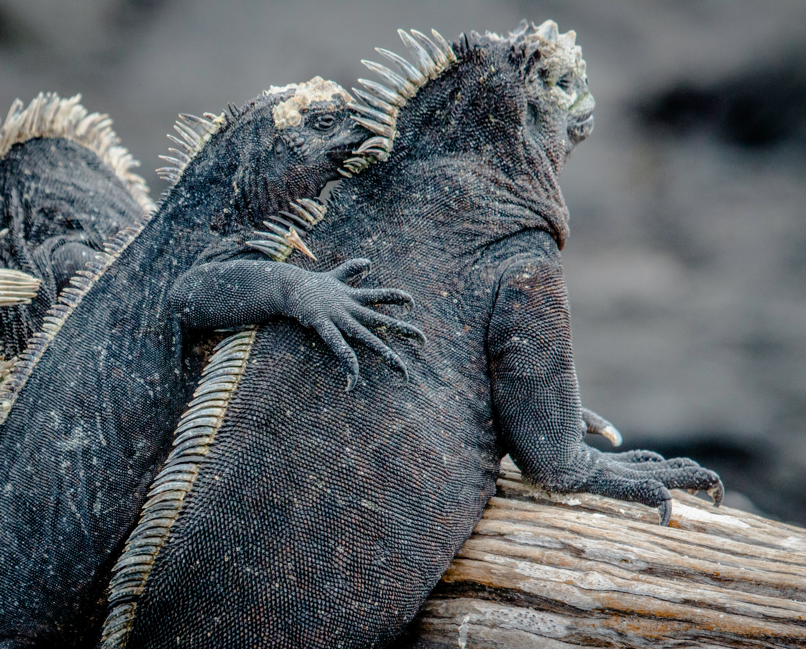
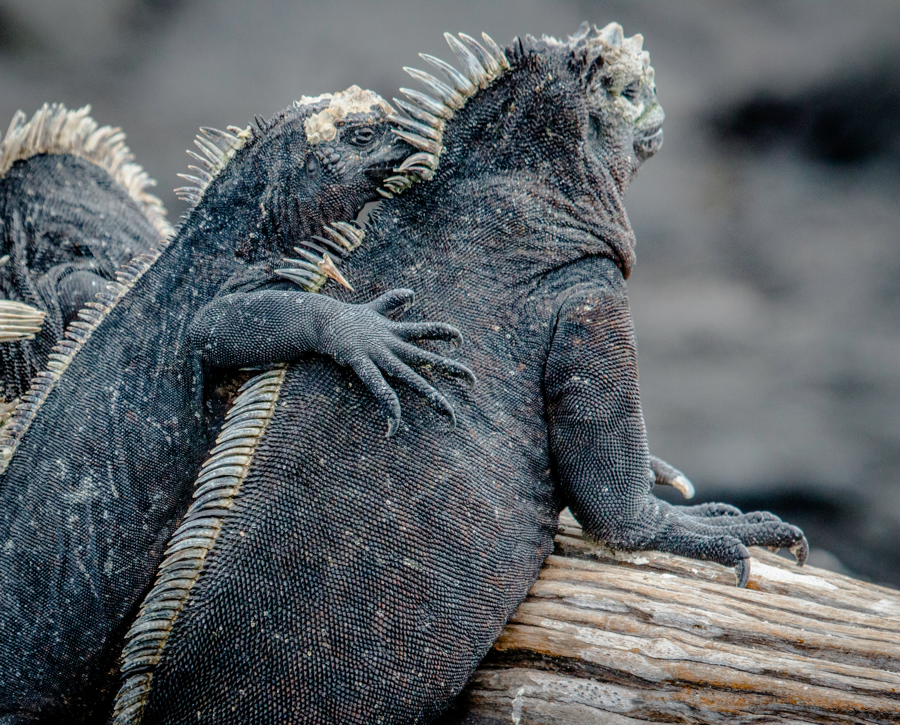

The Galapagos Islands, located off the coast of Ecuador, offer a wildlife experience unlike any other. The unique and diverse species of animals that inhabit the islands have been shaped by the isolated environment over thousands of years. Visitors can witness giant tortoises, sea lions, penguins, and marine iguanas in their natural habitats, creating an unforgettable experience. The Galapagos Islands have been recognized by UNESCO as a World Heritage site, and measures have been taken to protect the fragile ecosystem. With a combination of stunning landscapes and unparalleled wildlife encounters, the Galapagos Islands truly are a gem waiting to be discovered.The archipelago´s geology begins at the sea floor and emerges above sea level where biological processes continue.. Three major tectonic plates—Nazca, Cocos and Pacific— meet at the basis of the ocean, which is of significant geological interest. In comparison with most oceanic archipelagos, the Galapagos are very young with the largest and youngest islands, Isabela and Fernandina, with less than one million years of existence, and the oldest islands, Española and San Cristóbal, somewhere between three to five million years. The site demonstrates the evolution of the younger volcanic areas in the west and the older islands in the east. On-going geological and geomorphological processes, including recent volcanic eruptions, small seismic movements, and erosion provide key insights to the puzzle of the origin of the Galapagos Islands. Almost no other site in the world offers protection of such a complete continuum of geological and geomorphological features.